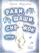

Рави, Шаши, Снежок и другие

Сергей Алексеевич Баруздин (1926-1991) написал много стихотворений и рассказов о детях. А эта книга - о животных. Вы прочтёте о том, как слонята Рави и Шаши оказались в Одесском зоопарке, преодолев далёкий путь через океан. О том, как белый медвежонок Снежок, оставшийся без матери, оказался в зоопарке Индии. И ещё здесь собраны увлекательные истории о хитром бурундуке Симпатяге, домашнем крокодиле Топ-Топе, простуженном ёжике и многих других братьях наших меньших. Для среднего школьного возраста.